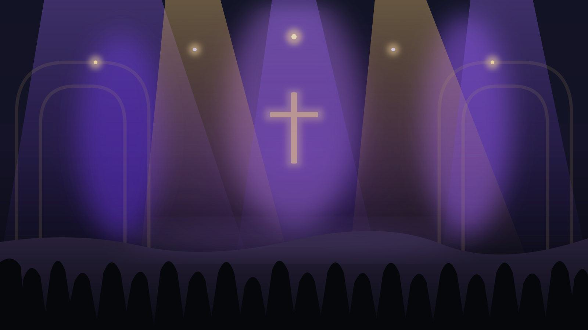
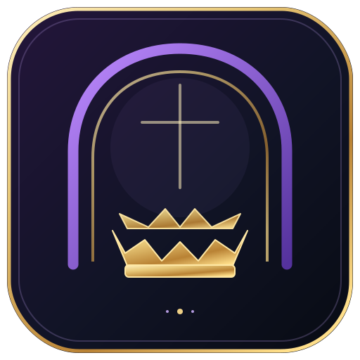

TOP · BOTTOM · LEFT · RIGHT
01 / LAYOUT
Choose exactly which edges show
Use a full frame, bottom-only border, U-shape, or turn individual sides off. Keep the visual clear of lyrics and important content.
Independent edgesSize & position
Give your church livestream a polished, consistent frame—with beautiful color looks, restrained motion effects, and practical OBS controls in one desktop app.
Installer download will activate when the installer file is added to the website.

FreeShow handles the slides. OBS handles the stream. Border Studio completes the look.
Control the border without rebuilding your presentation or covering the lyrics that matter.
Use a full frame, bottom-only border, U-shape, or turn individual sides off. Keep the visual clear of lyrics and important content.
Explore 31 curated themes, gradients, custom colors, and saved combinations that stay consistent from week to week.
Choose static, soft glow, breathe, pulse, sweep, heartbeat, or spectrum-style effects—then tune speed and intensity.
Connect to an OBS audio source for supported reactive effects. Adjust sensitivity and smoothing instead of relying on a one-size-fits-all setting.
Go understated for preaching, warm for celebration, or bold for a special program. Start from a curated theme and customize it to suit your stream.
Get started with Border Studio →Our recommendation
Start with Quiet Gold or Royal Purple, keep the panel transparent, and use a soft effect.
Church Border Studio complements your existing presentation system. It doesn't replace FreeShow or take over OBS.
Download the Windows installer and follow the setup wizard. Open OBS Studio and FreeShow as you normally do.
01 — — — 02Copy the overlay URL displayed by the app into a Browser Source in OBS. Set it to match your canvas, commonly 1920 × 1080.
02 — — — 03Choose a preset, confirm the edges don't obscure lyrics, then test effects and audio reactivity before going live.
READY FOR REHEARSALImportant: Audio-reactive effects require OBS WebSocket to be enabled and a valid OBS audio source selected. Static and slow-breathe effects can be used without audio metering.
Bring your colors, borders, and motion into one simple control app—so the message stays at the center of the screen.
Download links activate when the matching .exe files are uploaded to this site's downloads folder.

No cloud account or remote service is required for the app's normal local workflow.
Quick answers to the things you'll want to know before installing.
Start simply, test before going live, and keep the screen comfortable to watch.
Privacy & app data →The proposed launch model includes a Free Edition and a 14-day Pro trial, with an optional one-time Pro Lifetime purchase. Pro purchasing activates after the publisher finishes connecting the hosted checkout and email delivery services.
No. FreeShow remains responsible for displaying your lyrics and slides. Church Border Studio supplies the border overlay and visual controls through OBS.
The controller can open on its own, but the border is intended for an OBS Browser Source. Audio-reactive features also need OBS WebSocket configured and an active audio source selected.
The border is designed to be transparent with the panel background disabled by default. If you enable a backing panel, put the border source beneath the lyrics source in OBS.
This website package doesn't include your Windows .exe because the installer is built on your Windows PC. Upload Church-Border-Studio-Setup-16.0.0.exe into the site's downloads folder. The website will detect the file and activate the button. Do the same for the portable EXE if you want to offer it.
The app is designed for local control and keeps OBS connection details on the local Windows machine. The app documentation notes that the password is stored locally and is not encrypted, so don't share your settings folder.
Yes, after testing your particular OBS setup. Confirm the overlay URL, check text visibility, test all chosen effects, and verify your audio input before relying on them during a live service.